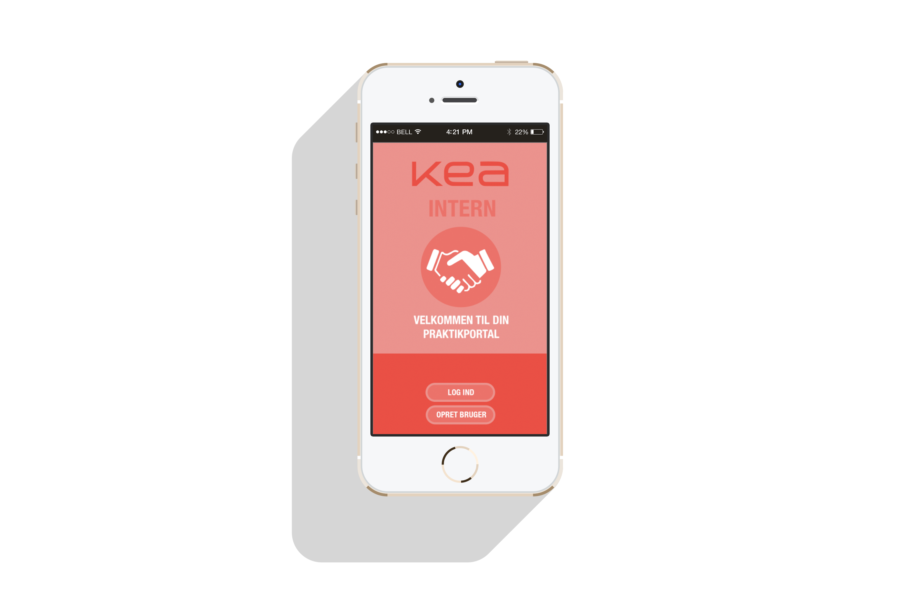

04 - UX
kea app
Introduktion
Første projekt i forløbet 04 UX handlede om at udvikle en app, der skulle løse en problemstilling på KEA. Dette forløb udmundede i en app løsning ved navn KEA INTERN, som skulle give KEA’s studerende et redskab, som kunne sænke kompleksitetsniveauet for praktiksøgningsprocessen og gøre den mere målrettet, effektiv og overskuelig.
Læring i dette forløb
Design thinking som idéudviklingsproces
I processen omkring app-udviklingen blev vi introduceret til Design thinking som iterativ proces, der gennem en helhedsorienteret analyse af problemet søger at udvikle en palette af løsningsmodeller inden man udvikler og implementerer en endelig løsning.
Design thinking gennemløber følgende faser;
- Emphathize: Her indsamles primær og sekundær data. På baggrund af denne data udformes et experience map, som kortlægger og grupperer de vigtige indsigter i overordnede problemstillinger. På denne måde skabes et overblik over indsigterne og hvorledes de kan grupperes i forskellige overordnede problemer, hvormed man kan danne sig et overblik over, hvilken problemstilling der er den mest kritiske og favner bredest om de opnåede indsigter.
- Define: Som navnet antyder defineres den eller de problemstillinger man udvælger fra sit experience map; pain points. På denne måde sikrer man at problemstillingen er klart defineret og konkretiseret. Dette gør at man kan arbejde målrettet med løsningen af problemstillingen.
Derudover udformes en persona, som en personificering af den opstillede målgruppe, hvormed man skaber et tydeligt billede af hvem målgruppen er og deres behov. - Ideate: Denne fase er her hvor den iterative idéudvikling udføres. Her arbejdede vi med Designcharette på samtlige pain-points, hvor gruppen brainstormer i flere iterationer og idéerne modificeres løbende for hver runde. På denne måde sikrer man at idéudviklingen bliver grundig og dermed at den endelige idé har et solidt fundament. Dette udmunder i et storyboard, som beskriver idéen og brugssituationerne for løsningen. Sidst men ikke mindst blev der formuleret et klart idégrundlag for den endelig løsning, hvor man nedfældede alle aktiviteter og features. På denne måde fik man kortlagt hele UI’en for app-løsningen, så man nemt kunne omsætte det til en paperprototype.
- Prototype: Denne fase handler om at udvikle UI’en for app-løsningen, således at man allerede på dette stadie kan teste den på brugere og på denne måde skabe en iterativ proces, som kan identificere problemer på et tidligt stadie i udviklingsprocessen. At udforme en paperprototype er ydermere nyttig, da det både er en hurtig måde at udvikle en app UI på samtidig med at en given testperson, vil være mere villig til at give feedback på en løsning, som er et work in progress.
- Test: Denne fase går ud på at teste sine paperprotyper. I denne forbindelse anvendte vi Tænke højt testen, imens en testperson fra målgruppen benyttede app’en. Denne test skal sikre at man identificerer problemer og uklarheder i app’ens UI. For at få det maksimale udbytte af disse tests er det vigtigt at gøre sig forberedelser ift. uddelegering af roller under testen og forberede testpersonen på formålet med testen og deres rolle. Til bearbejdning af testen udførte vi Datakodning, som identificere alle interessante indsigter og omsatte dem til løsningsforslag. Dette er en god måde at systematisere sin bearbejdning af den fundne data og målrettet implementere løsningerne i en ny iteration af prototypen.
Til sidst udvalgte man den endelige app-løsning ved at udføre konceptvalidering og dertilhørende benchmarking, hvor man positionerede de enkelte idéer indenfor områderne målgruppe, værdi og realiserbarhed. Hver kategoripunkt for en vægtning og derefter uddeler man scorer til samtlige idéer. På denne måde sikres en fair og saglig udvælgelsesproces, hvor man sikrer sig at beslutningsgrundlaget for valget af idé er solidt funderet i data.

Det endelige resultat
Test prototypen
